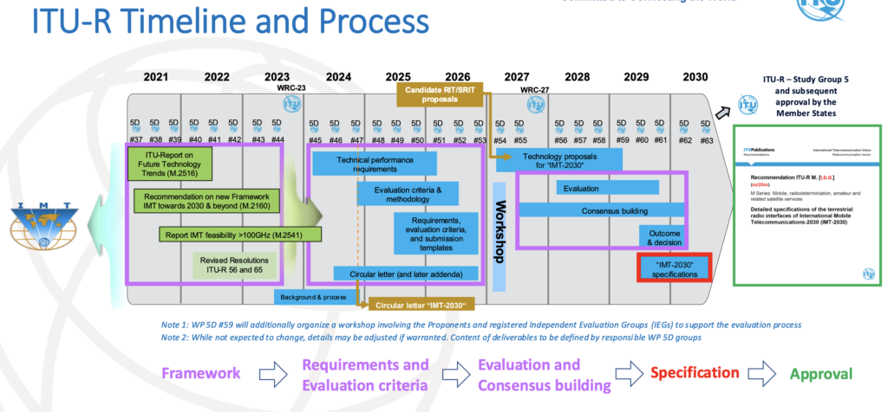

The Road to 6G: How We Got Here and What Comes Next
It’s a good time to talk about what 6G might look like.
3GPP just held a workshop in Korea last month to discuss perspectives on 6G, and there are some great documents coming from the very people making it, the 3GPP members themselves.
First of all, some Quick context on 3GPP
3GPP is the dominant consortium that creates specifications for mobile systems. Taking a step back: the ITU (the international telecom agency of the United Nations) publishes a document every ten years outlining what they expect a next-generation mobile system to be. For example, IMT-2020 is the document that was developed during the 2010s to set expectations for the fifth generation (yep, that’s 5G), which was meant to be deployed from 2020 to 2030.
Now, as we're in 2025, ITU has been working on the mobile system for the 2030–2040 horizon. So, IMT-2030 is the document that tells what the next generation should look like (hello, 6G!).

Of course, 6G is expected to be profitable (hopefully?), so it's normal that interest groups are formed to comply with those KPIs described in IMT-2030. Organizations working to meet IMT-2030 requirements must submit their proposals to the ITU for recommendation. But here’s the thing: the dominant group doing this work is 3GPP. They’re the ones creating the specifications that describe what a 5G /6G system should work like. That’s why we want to pay attention to them.
One precision: 3GPP makes specifications, not standards. That means they describe how the system works, but national governments decide on what to accept, what to impose in terms of compliance and conformance (let's talk about certification in some other post). Anyway, usually, countries' regulatory agencies follow the ITU recommendations, which are most of the time some 3GPP specs.
For example, IMT-2020 recommended four terrestrial radio interfaces: 3GPP 5G-SRIT (5G NSA + SA), 3GPP 5G-RIT (5G SA), 5Gi (Indian variation) and DECT 5G-SRIT.
3GPP specs are written by the companies that are members of it. The companies submitting the specs are, for example, and notablym Huawei, Qualcomm, Nokia, Ericsson, ZTE, Samsung, Apple, etc. So it’s worth paying attention to what they think 6G should be, because they're the ones building it.
The Path So Far
Before diving into those companies' visions for 6G, let’s revisit how we got here.
The context, to put it very straightforward: 4G was a huge success, but that wasn’t the case with 5G.
4G (LTE) was also developed by 3GPP, aligning with the ITU document IMT-Advanced. It was a massive hit thanks to much higher data rates, which enabled a wave of new services (Snapchat, mobile live streaming, video platforms, etc.) All of this made possible by technologies like carrier aggregation.
Compared to 3G (also by 3GPP, aligned with IMT-2000), 4G brought huge improvements in reliability, bitrate, and overall performance. 3G was a circuit-switched (CS) network, while 4G was designed as a packet-switched (PS) system, just like the Internet. You didn’t need to be a tech expert to feel the difference between 3G and 4G. 4G was just better.
5G was supposed to be the next revolution. It promised services like remote surgery, ultra-low latency, immersive experiences, insanely fast speeds, etc. It would unlock breakthroughs we couldn’t even imagine, the kind that would only emerge once the technology existed to support them.
But… those breakthrough use cases or services never really materialized. Sure, 5G works well in stadiums and high-density areas, and there are some wins like C-band performance, network slicing, and fixed wireless access. But overall? There’s a sense of disappointment.
FR2 or mmWave was heavily hyped in the standards but still has reduced penetration as a share of total coverage, with some countries simply not deploying it or only in very few specific locations. Telcos spent billions on licenses and deployment, but monetization didn’t follow. And customers don’t want to pay more for faster data.
To make things worse, the deployment options for 5G were chaotic. There were eight 5G deployment options (with sub-options!). Some were discarded, others standardized, some deployed, most of them not… and now we’ve got 5G SA and 5G NSA coexisting for many operators worldwide.
So after that cold shower of 5G, expectations for 6G are, let’s say, moderate.
The industry now expects some evolution, and not a total revolution. No one wants to invest billions again while 5G isn’t even fully deployed yet. 5G SA is still in its early days in most regions (greetings from Europe!).
Still, there’s hope that 6G will do better, learning from the hard lessons of 5G.
OK then, But What will 6G be like after all?
Great question!
To answer that, let’s look at what the 6G-makers themselves are saying... but in the next post.